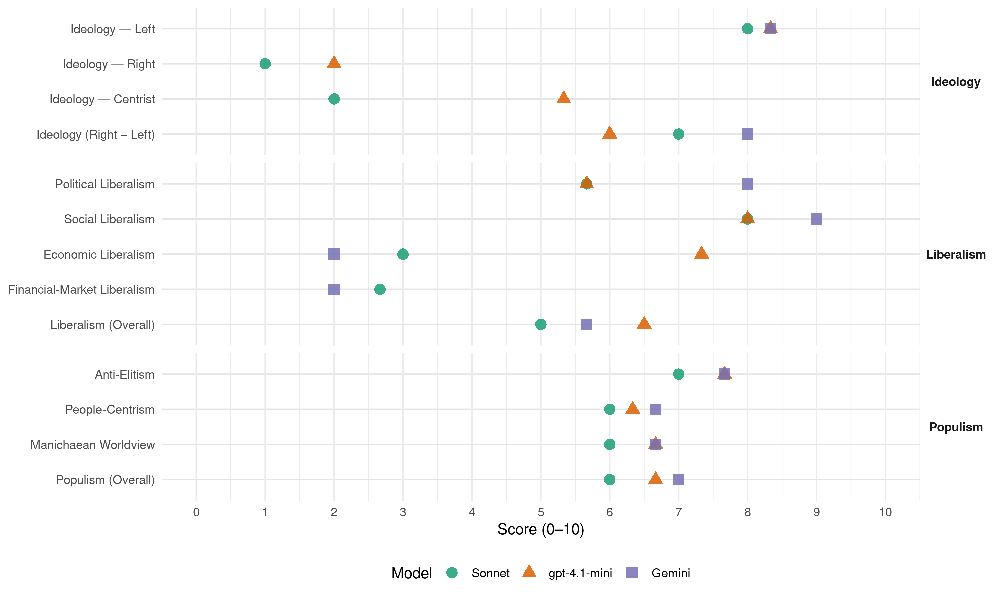

JCP (Japan, 2021)
manifesto_id 71220_202110
Get full text: This site shows derived annotations and short verbatim quotes only. The full manifesto text is © Manifesto Project / WZB — obtain it via manifesto-project.wzb.eu using the manifesto_id above.
Headline scores
| Dimension | Sonnet | gpt-4.1-mini | Gemini |
|---|---|---|---|
| Populism (Overall) | 6.0 | 6.7 | 7.0 |
| Anti-Elitism | 7.0 | 7.7 | 7.7 |
| People-Centrism | 6.0 | 6.3 | 6.7 |
| Manichaean Worldview | 6.0 | 6.7 | 6.7 |
| Ideology (Right − Left) | 7.0 | 6.0 | 8.0 |
| Liberalism (Overall) | 5.0 | 6.5 | 5.7 |
| Political Liberalism | 5.7 | 5.7 | 8.0 |
| Social Liberalism | 8.0 | 8.0 | 9.0 |
| Economic Liberalism | 3.0 | 7.3 | 2.0 |
| Financial-Market Liberalism | 2.7 | – | 2.0 |
Evidence per dimension
Economic Liberalism
Gemini · score 2.0 · verified · chunk 1
“弱肉強食の新自由主義を終わらせ”
日本共産党ならではの政策として四つのチェンジ─自公政治にかわる新しい日本のビジョンを訴えます。 弱肉強食の新自由主義を終わらせ、国民の命と暮らしを何よりも大切にする政治へのチェンジ
Gemini · score 2.0 · verified · chunk 2
“大企業優遇税制を廃止・縮小します”
消費税率を 5％に引き下げ、インボイス制度の導入を中止します。 大企業と富裕層に応分の負担を求めます。 ─租税特別措置や連結納税など、大企業優遇税制を廃止・縮小します。
Gemini · score 2.0 · verified · chunk 3
“民間まかせ、市場まかせ」の鉄道政策を見直し”
40 年前の国鉄民営化から続いている「民間まかせ、市場まかせ」の鉄道政策を見直し、鉄道の公共性、脱炭素社会への重要な役割にふさわしく国が公的に支えることが求められています。
gpt-4.1-mini · score 8.0 · verified · chunk 1
“消費税減税を行い、富裕層の負担を強化する”
最低賃金の引き上げや非正規雇用・フリーランスの処遇改善」、「消費税減税を行い、富裕層の負担を強化する」など、格差と貧困をなくし、暮らしを支える政治の中身が示されています。
gpt-4.1-mini · score 7.0 · verified · chunk 2
“自由市場、競争、企業、税制の見直し、消費税減税を行い、富裕層の負担を強化するなど公平な税制を実現”
・所得、法人、資産の税制、および社会保険料負担を見直し、消費税減税を行い、富裕層の負担を強化するなど公平な税制を実現し、また低所得層や中間層への再分配を強化する。
gpt-4.1-mini · score 7.0 · verified · chunk 3
“省エネは、企業にとっては、コスト削減のための投資であり、家計にとっても負担減になるのです。”
省エネは、「がまん」や「重荷」ではなく、企業にとっては、コスト削減のための投資であり、家計にとっても負担減になるのです。 （３）再生可能エネルギーの潜在量は電力需要の5倍─大きな可能性と必要性 再生可能エネルギーの可能性もきわめて大きなものがあります。 政府の試算でも、日本における再生可能エネルギーの潜在量は、現在の国内の電力需要の5 倍です。 再生可能エネルギーによる電力を、2030 年までに50％（現状の2 . 5倍）、2050 年までに100 ％にすることは十分可能です。
Sonnet · score 3.0 · verified · chunk 1
“法人税率を…安倍政権以前の28％に戻します”
法人税率を、中小企業を除いて安倍政権以前の28％に戻します。富裕層の株取引への税率を欧米並みの水準に引き上げます。
Sonnet · score 3.0 · verified · chunk 2
“規制緩和」や優遇税制で富裕層や大企業の目先の利益追求は擁護され”
その一方で、「規制緩和」や優遇税制で富裕層や大企業の目先の利益追求は擁護され、一部の富裕層、巨大企業は、コロナ危機でも利益を増やし
Sonnet · score 3.0 · verified · chunk 3
“民間まかせ、市場まかせ」の鉄道政策を見直し”
40年前の国鉄民営化から続いている「民間まかせ、市場まかせ」の鉄道政策を見直し、鉄道の公共性、脱炭素社会への重要な役割にふさわしく国が公的に支えることが求められています。
Financial-Market Liberalism
Gemini · score 2.0 · verified · chunk 2
“富裕層の株取引への税率を欧米並みの水準に引き上げます”
法人税率を、中小企業を除いて安倍政権以前の28％に戻します。 ─富裕層の株取引への税率を欧米並みの水準に引き上げます。 株の配当や譲渡益が分離課税とされ
Sonnet · score 2.0 · verified · chunk 1
“為替取引額に応じて低率の課税を行う”
富裕層の資産に毎年低率で課税する富裕税や、為替取引額に応じて低率の課税を行うなど、新たな税制を創設します。
Sonnet · score 3.0 · verified · chunk 2
“為替取引額に応じて低率の課税を行う”
富裕層の資産に毎年低率で課税する富裕税や、為替取引額に応じて低率の課税を行うなど、新たな税制を創設します。
Sonnet · score 3.0 · verified · chunk 3
“無利子・無担保・無保証の融資制度を創設”
中小企業、農林漁業を対象に、「省エネ投資」のための無利子・無担保・無保証の融資制度を創設します。
Political Liberalism
Gemini · score 8.0 · verified · chunk 1
“憲法違反、議会制民主主義破壊の政治”
憲法の規定に基づく国会議員からの臨時国会開会要求さえも無視するところまで、憲法違反、議会制民主主義破壊の政治はエスカレートしています。
Gemini · score 8.0 · verified · chunk 2
“日本国憲法の前文を含む全条項を厳格に守り”
─自民党改憲案に反対し、断念に追い込みま す。 ─日本国憲法の前文を含む全条項を厳格に守り、平和的・民主的条項の完全実施を求めます。
Gemini · score 8.0 · verified · chunk 3
“女性議員を増やす力にもなる比例代表制”
民意をただしく反映するとともに女性議員を増やす力にもなる比例代表制中心の選挙制度に変えます。
gpt-4.1-mini · score 3.0 · verified · chunk 1
“憲法を無視し、憲法に基づく政治という立憲主義を土台から壊しました”
第一に、憲法を無視し、憲法に基づく政治という立憲主義を土台から壊しました。 歴代の自民党政府が国民に説明してきた、「現憲法下では集団的自衛権は行使できない」という憲法解釈を、一内閣の閣議決定で百八十度変更し、憲法違反の安保法制を強行しました。
gpt-4.1-mini · score 7.0 · verified · chunk 2
“憲法に基づく政治の回復 ・安保法制、特定秘密保護法、共謀罪法などの法律の違憲部分を廃止”
野党共通政策 新型コロナウイルスの感染の急拡大の中で、自公政権の統治能力の喪失は明らかとなっている。 政策の破綻は、安倍、菅政権の 9 年間で情報を隠蔽し、理性的な対話を拒絶 してきたことの帰結である。 この秋に行われる衆議院総選挙で野党協力を広げ、自公政権を倒し、新しい政治を実現することは、日本の世の中に道理と正義を回復するとともに、市民の命を守るために不可欠である。 市民連合は、野党各党に次の諸政策を共有して戦い、下記の政策を実行する政権の実現をめざすことを求める。 １ 憲法に基づく政治の回復 ・安保法制、特定秘密保護法、共謀罪法などの法律の違憲部分を廃止し、コロナ禍に乗じた憲法改悪に反対する。 ・平和憲法の精神に基づき、総合的な安全保障の手段を追求し、アジアにおける平和の創出のためにあらゆる外交努力を行う。 ・核兵器禁止条約の批准をめざし、まずは締約国会議へのオブザーバー参加に向け努力する ・地元合意もなく、環境を破壊する沖縄辺野古での新基地建設を中止する。
gpt-4.1-mini · score 7.0 · verified · chunk 3
“政治分野における男女共同参画推進法の立法趣旨に沿い、パリテ（男女議員同数化）に取り組みます。”
意思決定の場に女性を増やし、あらゆる政策にジェンダーの視点を貫く「ジェンダー主流化」を進めます 90 年代以降、世界は「ジェンダー主流化」を合言葉に、根強く残る男女格差の解消を進めてき ました。 「ジェンダー主流化」とは、あらゆる分野で、計画、法律、政策などをジェンダーの視点 でとらえ直し、すべての人の人権を支える仕組みを根底からつくり直していくことです。 そのためにも、政治家や、企業の管理職はもちろん、各種団体、地域など、あらゆる場面で女性の参画を進めることが求められています。 意思決定の場に女性を増やすことは、ジェンダー平等を進めるために欠かせません。 ─「2030 年までに政策・意思決定の構成を男女半々に」の目標をかかげ、積極的差別是正措置を活用した実効性ある本気の取り組みを進めます。 ─政治分野における男女共同参画推進法の立法趣旨に沿い、パリテ（男女議員同数化）に取り組みます。 民意をただしく反映するとともに女性議員を増やす力にもなる比例代表制中心の選挙制度に変えます。 高すぎる供託金を引き下げます。
Sonnet · score 6.0 · verified · chunk 1
“立憲主義を土台から壊しました”
第一に、憲法を無視し、憲法に基づく政治という立憲主義を土台から壊しました。
Sonnet · score 5.0 · verified · chunk 2
“憲法に基づく政治の回復”
１ 憲法に基づく政治の回復 ・安保法制、特定秘密保護法、共謀罪法などの法律の違憲部分を廃止し、コロナ禍に乗じた憲法改悪に反対する。
Sonnet · score 6.0 · verified · chunk 3
“比例代表制中心の選挙制度に変えます”
民意をただしく反映するとともに女性議員を増やす力にもなる比例代表制中心の選挙制度に変えます。高すぎる供託金を引き下げます。
Liberalism (Overall)
Gemini · score 6.0 · verified · chunk 1
“憲法違反、議会制民主主義破壊の政治”
憲法の規定に基づく国会議員からの臨時国会開会要求さえも無視するところまで、憲法違反、議会制民主主義破壊の政治はエスカレートしています。
Gemini · score 5.0 · verified · chunk 2
“日本国憲法の前文を含む全条項を厳格に守り”
─自民党改憲案に反対し、断念に追い込みま す。 ─日本国憲法の前文を含む全条項を厳格に守り、平和的・民主的条項の完全実施を求めます。
Gemini · score 6.0 · verified · chunk 3
“性的マイノリティーの権利保障と理解促進”
LGBT平等法を制定し、社会のあらゆる場面で性的マイノリティーの権利保障と理解促進を図ります。
gpt-4.1-mini · score 6.0 · mixed · chunk 1
“憲法を無視し、憲法に基づく政治という立憲主義を土台から壊しました”
第一に、憲法を無視し、憲法に基づく政治という立憲主義を土台から壊しました。 歴代の自民党政府が国民に説明してきた、「現憲法下では集団的自衛権は行使できない」という憲法解釈を、一内閣の閣議決定で百八十度変更し、憲法違反の安保法制を強行しました。
gpt-4.1-mini · score 7.0 · verified · chunk 2
“憲法に基づく政治の回復 ・安保法制、特定秘密保護法、共謀罪法などの法律の違憲部分を廃止”
野党共通政策 新型コロナウイルスの感染の急拡大の中で、自公政権の統治能力の喪失は明らかとなっている。 政策の破綻は、安倍、菅政権の 9 年間で情報を隠蔽し、理性的な対話を拒絶 してきたことの帰結である。 この秋に行われる衆議院総選挙で野党協力を広げ、自公政権を倒し、新しい政治を実現することは、日本の世の中に道理と正義を回復するとともに、市民の命を守るために不可欠である。 市民連合は、野党各党に次の諸政策を共有して戦い、下記の政策を実行する政権の実現をめざすことを求める。 １ 憲法に基づく政治の回復 ・安保法制、特定秘密保護法、共謀罪法などの法律の違憲部分を廃止し、コロナ禍に乗じた憲法改悪に反対する。 ・平和憲法の精神に基づき、総合的な安全保障の手段を追求し、アジアにおける平和の創出のためにあらゆる外交努力を行う。 ・核兵器禁止条約の批准をめざし、まずは締約国会議へのオブザーバー参加に向け努力する ・地元合意もなく、環境を破壊する沖縄辺野古での新基地建設を中止する。
gpt-4.1-mini · score 6.0 · verified · chunk 3
“省エネは、企業にとっては、コスト削減のための投資であり、家計にとっても負担減になるのです。”
省エネは、「がまん」や「重荷」ではなく、企業にとっては、コスト削減のための投資であり、家計にとっても負担減になるのです。 （３）再生可能エネルギーの潜在量は電力需要の5倍─大きな可能性と必要性 再生可能エネルギーの可能性もきわめて大きなものがあります。 政府の試算でも、日本における再生可能エネルギーの潜在量は、現在の国内の電力需要の5 倍です。 再生可能エネルギーによる電力を、2030 年までに50％（現状の2 . 5倍）、2050 年までに100 ％にすることは十分可能です。
Sonnet · score 5.0 · verified · chunk 1
“ジェンダー平等の日本へのチェンジ”
ジェンダー平等の日本へのチェンジ 憲法9条を生かした平和外交へのチェンジ
Sonnet · score 5.0 · verified · chunk 2
“平和的・民主的条項の完全実施を求めます”
日本国憲法の前文を含む全条項を厳格に守り、平和的・民主的条項の完全実施を求めます。
Sonnet · score 5.0 · verified · chunk 3
“LGBT平等法を制定し、性的マイノリティーの権利保障”
LGBT平等法を制定し、社会のあらゆる場面で性的マイノリティーの権利保障と理解促進を図ります。
Anti-Elitism
Gemini · score 8.0 · verified · chunk 1
“政権のトップが国政を私物化した”
森友・加計問題や桜を見る会では、政権のトップが国政を私物化した疑惑の真相解明を妨害するために
Gemini · score 7.0 · verified · chunk 2
“安倍、菅政権の 9 年間で情報を隠蔽し”
自公政権の統治能力の喪失は明らかとなっている。 政策の破綻は、安倍、菅政権の 9 年間で情報を隠蔽し、理性的な対話を拒絶 してきたことの帰結である。
Gemini · score 8.0 · verified · chunk 3
“財界いいなりの政治を変え”
気候危機打開の取り組みをすすめるためには、 財界いいなりの政治を変え、石炭火力利益共同体、原発利益共同体の抵抗を排除しなければなりません。
gpt-4.1-mini · score 9.0 · verified · chunk 1
“政権の腐敗は、忖度政治を生み出し”
政権の腐敗は、忖度政治を生み出し、高級官僚の腐敗など行政機能の劣化も引き起こしています。 岸田首相は、就任会見で「安倍政治、菅政治とどこが違うのか」という質問に、何一つ具体的に答えることはできませんでした。
gpt-4.1-mini · score 7.0 · verified · chunk 2
“「異常なアメリカいいなり」の政治をただす”
（３）「異常なアメリカいいなり」の政治をただす 「異常なアメリカいいなり」の政治をただすことは、9 条を生かした平和な日本をつくることと一体の問題であり、日本共産党はそのために全力をあげます。 ■安保法制を廃止し、大軍拡から軍縮への転換を アメリカが起こす戦争に、世界中で、切れ目なく、自衛隊が参戦する道を開く、憲法違反の安保法制= 戦争法が強行されて6 年になります。
gpt-4.1-mini · score 7.0 · verified · chunk 3
“財界いいなりの政治を変え、石炭火力利益共同体、原発利益共同体の抵抗を排除しなければなりません。”
気候危機打開の取り組みをすすめるためには、 財界いいなりの政治を変え、石炭火力利益共同体、原発利益共同体の抵抗を排除しなければなりません。 とりわけ、1990 年代から顕著になった新自由主義の政治の根本的な切り替えが必要です。
Sonnet · score 8.0 · verified · chunk 1
“政権の腐敗は、忖度政治を生み出し”
現場の公務員に公文書を改ざんさせ、名簿をシュレッダーにかけ、高級官僚が国会で虚偽答弁を繰り返すなど、政権ぐるみで隠ぺいしてきました。政権の腐敗は、忖度政治を生み出し、高級官僚の腐敗など行政機能の劣化も引き起こしています。
Sonnet · score 7.0 · verified · chunk 2
“弱肉強食の新自由主義を終わらせ”
コロナ危機は、日本社会のさまざまな問題を浮き彫りにしています。弱肉強食の新自由主義を終わらせ、命と暮らしを大切にする政治への転換を
Sonnet · score 6.0 · verified · chunk 3
“財界いいなりの政治を変え”
気候危機打開の取り組みをすすめるためには、財界いいなりの政治を変え、石炭火力利益共同体、原発利益共同体の抵抗を排除しなければなりません。
Ideology — Centrist
gpt-4.1-mini · score 7.0 · verified · chunk 1
“政権交代で、命を守る政治を”
自公政権を終わりにして、政権交代で、命を守る政治を 岸田政権が引き継ぐ、安倍・菅政治は、日本の政治をとことんダメにしました
gpt-4.1-mini · score 5.0 · verified · chunk 2
“憲法9 条を生かした外交で平和な日本とアジアをつくることです”
いま必要なことは、憲法を変えることではなく、憲法9 条を生かした外交で平和な日本とアジアをつくることです。 この間、「2020 年までに9 条改憲を実現する」という安倍元首相の野望を、国民の世論と運動が包囲し阻んできました。
gpt-4.1-mini · score 4.0 · verified · chunk 3
“思想・信条の違いをこえて力をあわせることをよびかけます。”
地球を守り、将来の世代に豊かな自然環境を引き継ぐために、いまの政治を変えましょう。 思想・信条の違いをこえて力をあわせることをよびかけます。 ジェンダー平等の日本へ いまこそ政治の転換を いま私たちの社会は、口先だけの「男女共同参画」や「多様性の尊重」でなく、本気でジェンダー平等に取り組む政治を渇望しています。
Sonnet · score 2.0 · verified · chunk 1
“市民と野党の共闘をすすめてきた”
ぶれずに、誠実に、市民と野党の共闘をすすめてきた日本共産党の躍進が必要です。
Sonnet · score 2.0 · verified · chunk 2
“市民と野党の共闘で、自公政権を倒し”
本土と沖縄の連帯、市民と野党の共闘で、自公政権を倒し、辺野古基地断念、普天間基地撤去を掲げた「沖縄建白書」を実行する
Sonnet · score 2.0 · verified · chunk 3
“思想・信条の違いをこえて力をあわせる”
地球を守り、将来の世代に豊かな自然環境を引き継ぐために、いまの政治を変えましょう。思想・信条の違いをこえて力をあわせることをよびかけます。
Ideology — Left
Gemini · score 8.0 · verified · chunk 1
“富裕層と大企業に応分の負担を求め”
給食費の無償化など、憲法で無償と決められながら義務教育に残された負担をなくします。 富裕層と大企業に応分の負担を求め、消費税は5％に減税します。
Gemini · score 8.0 · verified · chunk 2
“弱肉強食の新自由主義を終わらせ”
コロナ危機を乗り越え、暮らしに 安心と希望を ─日本共産党の新経済提言 弱肉強食の新自由主義を終わらせ、命と暮らしを大切にする 政治への転換を
Gemini · score 9.0 · verified · chunk 3
“新自由主義の政治の根本的な切り替え”
とくに、1990 年代から顕著になった新自由主義の政治の根本的な切り替えが必要です。 大企業の目先の利益拡大と株主利益の最大化をめざす
gpt-4.1-mini · score 9.0 · verified · chunk 1
“消費税減税を行い、富裕層の負担を強化する”
最低賃金の引き上げや非正規雇用・フリーランスの処遇改善」、「消費税減税を行い、富裕層の負担を強化する」など、格差と貧困をなくし、暮らしを支える政治の中身が示されています。
gpt-4.1-mini · score 8.0 · verified · chunk 2
“所得、法人、資産の税制、および社会保険料負担を見直し、消費税減税を行い、富裕層の負担を強化するなど公平な税制を実現”
・所得、法人、資産の税制、および社会保険料負担を見直し、消費税減税を行い、富裕層の負担を強化するなど公平な税制を実現し、また低所得層や中間層への再分配を強化する。
gpt-4.1-mini · score 8.0 · verified · chunk 3
“大企業の目先の利益拡大と株主利益の最大化をめざす新自由主義によって、企業は省エネや再生可能エネルギーのような中長期的な投資より、短期の利益確保に追われ、金融投機やリストラによるコスト削減にはしりました。”
気候危機の打開は、貧困と格差をただすことと一体のものです。 どちらも根っこにあるのは、目先の利益さえあがればよい、後は野となれ山となれの新自由主義の政治であり、その転換こそが求められています。 脱炭素化は、大きな社会経済システムの転換、 「システムの移行」を必要とする大改革です。 再生可能エネルギーは、将来性豊かな産業であり、地域経済の活性化にもつながる大きな可能性をもっていますが、そこでの雇用が非正規・低賃金労働ということでは、「システム移行」への抵抗も大きくなり、地域経済の活性化どころか、衰退に拍車をかけるものにもなりかねません。 脱炭素化のための「システムの移行」は、貧困や格差をただし、国民の暮らしと権利を守るルールある経済社会をめざす、「公正な移行」でなくてはなりません。 自公政権は「解雇規制などの労働者保護があるから、古い産業から新しい産業への労働移動が起きない」と言って、労働法制を改悪し、非正規雇用を増やす新自由主義の政治をすすめてきました。 しかし、現実に起きたことは、労働法制の改悪で「新しい産業」でも不安定・低賃金の非正規雇用が急速に広がり、それと一体で正社員の長時間労働が激化したのです。 労働条件が悪化する「雇用移動」は、リストラ・解雇などの強制力がなければ起きませんし、それが雇用の不安定化 と貧困と格差の拡大をまねき、日本社会と経済にとっても大きな打撃となったのです。 脱炭素化のための「システムの移行」にさいして、こうした誤った道を繰り返してはなりません。 再生可能エネルギーをはじめとした新しい成長分野でも、エネルギー転換の影響を受ける産業でも、人間らしく働ける雇用のルールを確立し、雇用と暮らしを抜本的に向上させることが「公正な移行」のために必要です。 気候危機の打開は、貧困と格差の是正と一体に ─「公正な移行」として推進してこそ、達成することができます。
Sonnet · score 9.0 · verified · chunk 1
“消費税は5％に減税します”
富裕層と大企業に応分の負担を求め、消費税は5％に減税します。医療をはじめ社会保障の切り捨てをやめ拡充に転換します。
Sonnet · score 8.0 · verified · chunk 2
“大企業と富裕層に応分の負担を求めます”
コロナ危機のもとでも浮き彫りになった、不公平税制をただします。大企業と富裕層に応分の負担を求めます。─租税特別措置や連結納税など、大企業優遇税制を廃止・縮小します。
Sonnet · score 7.0 · verified · chunk 3
“新自由主義の政治の根本的な切り替えが必要”
とりわけ、1990年代から顕著になった新自由主義の政治の根本的な切り替えが必要です。大企業の目先の利益拡大と株主利益の最大化をめざす新自由主義によって
Ideology (Right − Left)
Gemini · score 8.0 · verified · chunk 1
“富裕層と大企業に応分の負担を求め”
給食費の無償化など、憲法で無償と決められながら義務教育に残された負担をなくします。 富裕層と大企業に応分の負担を求め、消費税は5％に減税します。
Gemini · score 8.0 · verified · chunk 2
“弱肉強食の新自由主義を終わらせ”
コロナ危機を乗り越え、暮らしに 安心と希望を ─日本共産党の新経済提言 弱肉強食の新自由主義を終わらせ、命と暮らしを大切にする 政治への転換を
Gemini · score 8.0 · verified · chunk 3
“新自由主義の政治の根本的な切り替え”
とくに、1990 年代から顕著になった新自由主義の政治の根本的な切り替えが必要です。 大企業の目先の利益拡大と株主利益の最大化をめざす
gpt-4.1-mini · score 7.0 · verified · chunk 1
“政権交代で、命を守る政治を”
自公政権を終わりにして、政権交代で、命を守る政治を 岸田政権が引き継ぐ、安倍・菅政治は、日本の政治をとことんダメにしました
gpt-4.1-mini · score 6.0 · verified · chunk 2
“「異常なアメリカいいなり」の政治をただす”
（３）「異常なアメリカいいなり」の政治をただす 「異常なアメリカいいなり」の政治をただすことは、9 条を生かした平和な日本をつくることと一体の問題であり、日本共産党はそのために全力をあげます。 ■安保法制を廃止し、大軍拡から軍縮への転換を アメリカが起こす戦争に、世界中で、切れ目なく、自衛隊が参戦する道を開く、憲法違反の安保法制= 戦争法が強行されて6 年になります。
gpt-4.1-mini · score 5.0 · verified · chunk 3
“財界いいなりの政治を変え、石炭火力利益共同体、原発利益共同体の抵抗を排除しなければなりません。”
気候危機打開の取り組みをすすめるためには、 財界いいなりの政治を変え、石炭火力利益共同体、原発利益共同体の抵抗を排除しなければなりません。 とりわけ、1990 年代から顕著になった新自由主義の政治の根本的な切り替えが必要です。
Sonnet · score 8.0 · verified · chunk 1
“大企業は守る─新自由主義の政治は、もう終わりに”
国民に冷たく、富裕層にあたたかい、中小企業に厳しく、大企業は守る─新自由主義の政治は、もう終わりにして、命と暮らしを何よりも大切にする政治に切り替えましょう。
Sonnet · score 7.0 · verified · chunk 2
“新自由主義の政治から転換し”
新自由主義の政治から転換し、国民の命と暮らしを最優先にする政治に切り替えましょう。
Sonnet · score 6.0 · verified · chunk 3
“貧困と格差をただすことと一体のもの”
気候危機の打開は、貧困と格差をただすことと一体のものです。どちらも根っこにあるのは、目先の利益さえあがればよい、後は野となれ山となれの新自由主義の政治であり
Ideology — Right
gpt-4.1-mini · score 2.0 · verified · chunk 1
“沖縄辺野古での新基地建設を中止する”
外交政策でも、「核兵器禁止条約の批准をめざし、まずは締約国会議へのオブザーバー参加に向け努力する」、「沖縄辺野古での新基地建設を中止する」など、大きな転換の方向を示しています。
gpt-4.1-mini · score 2.0 · verified · chunk 2
“中国の覇権主義、人権侵害─国際法にもとづく冷静な外交的批判を”
中国が、東シナ海、南シナ海での力を背景にした現状変更の動きなど、覇権主義の行動を強めていることは、重大です。 香港、新疆ウイグル自治区などでの人権侵害も国際問題となっています。 日本共産党は、これらに対して、国連憲章と国際法にもとづく冷静な外交的批判をつくしてきました。
Sonnet · score 1.0 · verified · chunk 1
“外国人の人権を尊重し、多様性を認めながら”
外国人の人権を尊重し、多様性を認めながら共生する社会に
Sonnet · score 1.0 · verified · chunk 2
“「反中国」の排外主義をあおり立てること”
日本共産党は、中国指導部の誤った行動は批判しますが、「反中国」の排外主義をあおり立てること、過去の侵略戦争を美化する歴史修正主義には厳しく反対します。
Manichaean Worldview
Gemini · score 6.0 · verified · chunk 1
“政権の腐敗は、忖度政治 を生み出し”
政権ぐるみ そんたく で隠ぺいしてきました。 政権の腐敗は、忖度政治 を生み出し、高級官僚の腐敗など
Gemini · score 7.0 · verified · chunk 2
“国民に冷たく、富裕層にあたたかい”
一部の富裕層、巨大企業は、コロナ危機でも利益を増や し、巨額の資産をため込んでいます。 国民に冷たく、富裕層にあたたかい、中小企業に厳しく、大企業は守る
Gemini · score 7.0 · verified · chunk 3
“後は野となれ山となれの新自由主義”
どちらも根っこにあるのは、目先の利益さえあがればよい、後は野となれ山となれの新自由主義の政治であり、その転換こそが求められています。
gpt-4.1-mini · score 8.0 · verified · chunk 1
“政権のトップが国政を私物化した疑惑の真相解明を妨害”
森友・加計問題や桜を見る会では、政権のトップが国政を私物化した疑惑の真相解明を妨害するために、現場の公務員に公文書を改ざんさせ、名簿をシュレッダーにかけ、高級官僚が国会で虚偽答弁を繰り返すなど、政権ぐるみそんたくで隠ぺいしてきました。
gpt-4.1-mini · score 6.0 · verified · chunk 2
“「異常なアメリカいいなり」の政治をただす”
（３）「異常なアメリカいいなり」の政治をただす 「異常なアメリカいいなり」の政治をただすことは、9 条を生かした平和な日本をつくることと一体の問題であり、日本共産党はそのために全力をあげます。 ■安保法制を廃止し、大軍拡から軍縮への転換を アメリカが起こす戦争に、世界中で、切れ目なく、自衛隊が参戦する道を開く、憲法違反の安保法制= 戦争法が強行されて6 年になります。
gpt-4.1-mini · score 6.0 · verified · chunk 3
“気候変動の重大な危機は、石炭火力や原発に固執する、いまの政治を変えることなしには、打開することはできないからです。”
同時に、個々人や家庭の努力だけでは、脱炭素は実現できません。 気候変動の重大な危機は、石炭火力や原発に固執する、いまの政治を変えることなしには、打開することはできないからです。 いま、気候危機の打開を求める動きは世界で大きく広がっています。
Sonnet · score 7.0 · verified · chunk 1
“弱肉強食の新自由主義を終わらせ”
弱肉強食の新自由主義を終わらせ、国民の命と暮らしを何よりも大切にする政治へのチェンジ
Sonnet · score 6.0 · verified · chunk 2
“国民に冷たく、富裕層にあたたかい”
国民に冷たく、富裕層にあたたかい、中小企業に厳しく、大企業は守る─新自由主義の政治は、もう終わりにして
Sonnet · score 5.0 · verified · chunk 3
“石炭火力利益共同体、原発利益共同体の抵抗を排除”
財界いいなりの政治を変え、石炭火力利益共同体、原発利益共同体の抵抗を排除しなければなりません。
People-Centrism
Gemini · score 7.0 · verified · chunk 1
“国民の声を「聞く耳」は持ち合わせていない”
そのまま引き継ぐ岸田政権には、国民の声を「聞く耳」は持ち合わせていないと断ぜざるを得ません。
Gemini · score 6.0 · verified · chunk 2
“国民の世論と運動が包囲し阻んできました”
「2020 年までに9 条改憲を実現する」という安倍元首相の野望を、国民の世論と運動が包囲し阻んできました。 この成果に確信をもって
Gemini · score 7.0 · verified · chunk 3
“一人ひとりが気候危機打開の主人公です”
脱炭素社会の実現は、私たち一人ひとりの決意と行動にかかっています。 一人ひとりが気候危機打開の主人公です。
gpt-4.1-mini · score 8.0 · verified · chunk 1
“国民の声を「聞く耳」は持ち合わせていない”
辺野古新基地建設も、原発再稼働も、学術会議会員任命拒否も、そのまま引き継ぐ岸田政権には、国民の声を「聞く耳」は持ち合わせていないと断ぜざるを得ません。
gpt-4.1-mini · score 6.0 · verified · chunk 2
“国民の世論と運動が包囲し阻んできました”
この間、「2020 年までに9 条改憲を実現する」という安倍元首相の野望を、国民の世論と運動が包囲し阻んできました。 この成果に確信をもって、総選挙で、改憲勢力を少数派に追い込み、憲法9 条改憲のたくらみに文字通りの終止符を打とうではありませんか。
gpt-4.1-mini · score 5.0 · verified · chunk 3
“脱炭素社会の実現は、私たち一人ひとりの決意と行動にかかっています。 一人ひとりが気候危機打開の主人公です。”
気候危機打開へ─いまの政治を変えるために力を 合わせよう 脱炭素社会の実現は、私たち一人ひとりの決意と行動にかかっています。 一人ひとりが気候危機打開の主人公です。 ライフスタイル、生活様式を見直すことも、自分の地域にある再生可能エネルギーを、地域のみなさんと力をあわせて開発・利用することも大切です。
Sonnet · score 7.0 · verified · chunk 1
“命と暮らしを何よりも大切にする政治”
弱肉強食の新自由主義を終わらせ、命と暮らしを何よりも大切にする政治へのチェンジ
Sonnet · score 6.0 · verified · chunk 2
“国民の世論と運動が包囲し阻んできました”
「2020年までに9条改憲を実現する」という安倍元首相の野望を、国民の世論と運動が包囲し阻んできました。この成果に確信をもって
Sonnet · score 5.0 · verified · chunk 3
“一人ひとりが気候危機打開の主人公”
脱炭素社会の実現は、私たち一人ひとりの決意と行動にかかっています。一人ひとりが気候危機打開の主人公です。
Populism (Overall)
Gemini · score 7.0 · verified · chunk 1
“政権のトップが国政を私物化した”
森友・加計問題や桜を見る会では、政権のトップが国政を私物化した疑惑の真相解明を妨害するために
Gemini · score 7.0 · verified · chunk 2
“国民に冷たく、富裕層にあたたかい”
一部の富裕層、巨大企業は、コロナ危機でも利益を増や し、巨額の資産をため込んでいます。 国民に冷たく、富裕層にあたたかい、中小企業に厳しく、大企業は守る
Gemini · score 7.0 · verified · chunk 3
“財界いいなりの政治を変え”
気候危機打開の取り組みをすすめるためには、 財界いいなりの政治を変え、石炭火力利益共同体、原発利益共同体の抵抗を排除しなければなりません。
gpt-4.1-mini · score 8.0 · verified · chunk 1
“政権の腐敗は、忖度政治を生み出し”
政権の腐敗は、忖度政治を生み出し、高級官僚の腐敗など行政機能の劣化も引き起こしています。 岸田首相は、就任会見で「安倍政治、菅政治とどこが違うのか」という質問に、何一つ具体的に答えることはできませんでした。
gpt-4.1-mini · score 6.0 · verified · chunk 2
“「異常なアメリカいいなり」の政治をただす”
（３）「異常なアメリカいいなり」の政治をただす 「異常なアメリカいいなり」の政治をただすことは、9 条を生かした平和な日本をつくることと一体の問題であり、日本共産党はそのために全力をあげます。 ■安保法制を廃止し、大軍拡から軍縮への転換を アメリカが起こす戦争に、世界中で、切れ目なく、自衛隊が参戦する道を開く、憲法違反の安保法制= 戦争法が強行されて6 年になります。
gpt-4.1-mini · score 6.0 · verified · chunk 3
“財界いいなりの政治を変え、石炭火力利益共同体、原発利益共同体の抵抗を排除しなければなりません。”
気候危機打開の取り組みをすすめるためには、 財界いいなりの政治を変え、石炭火力利益共同体、原発利益共同体の抵抗を排除しなければなりません。 とりわけ、1990 年代から顕著になった新自由主義の政治の根本的な切り替えが必要です。
Sonnet · score 7.0 · verified · chunk 1
“政治を変えるには政権交代しかありません”
自民党内の「政権たらい回し」では、政治は1ミリも変わらないことを自民党総裁選と岸田内閣の誕生が示しています。政治を変えるには政権交代しかありません。
Sonnet · score 6.0 · verified · chunk 2
“自公政権を倒すことです”
沖縄の基地問題を解決する方法は明瞭です。自公政権を倒すことです。本土と沖縄の連帯、市民と野党の共闘で、自公政権を倒し
Sonnet · score 5.0 · verified · chunk 3
“財界いいなりの政治を変え”
気候危機打開の取り組みをすすめるためには、財界いいなりの政治を変え、石炭火力利益共同体、原発利益共同体の抵抗を排除しなければなりません。
Social Liberalism